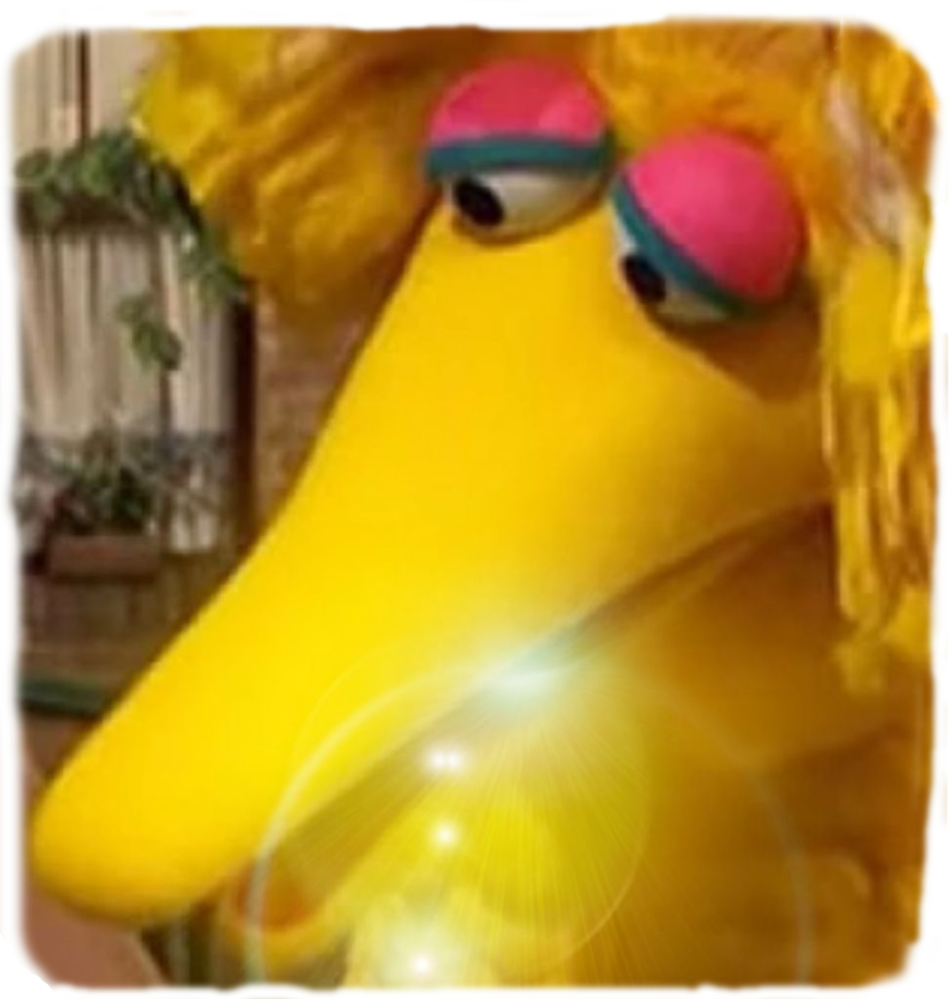
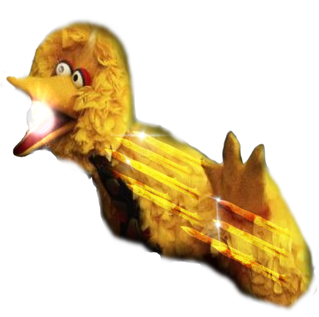
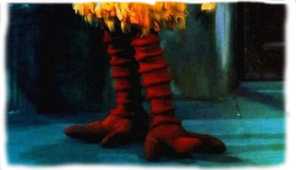

Clique nas areas Coloridas!

Bico
Possuindo um bico de 50 centímetros, quase o tamanho do braço de uma pessoa. Com até 1,8 metro de comprimento e 2,5 metros de envergadura — distância entre a ponta das duas asas, o poder de seu bico pode ser considerado o trunfo de sua vitória, pois com ele Garibaldo consegue quebrar madeiras, aços, vibranium, adamantium, com tremenda facilidade, E com esse mesmo bico Garibaldo conjura magia ancestrail!

Asas
Com essas duas e potentes asas-braços Garaibaldo consegue criar escudos impenetráveis, sendo assim ele pode criar ondas de ventos ao balançar suas grandes asas que é capaz de rachar montanhas, ou até mesmo quebra-las, e o pior é que sua penugem é como navalha, porém Garibaldo não pode voar com elas em decadente ao seu peso colossal!

Pernas
Já ouviu alguém chamar fulano de pernas-de-saracura? então no caso de Garibaldo isso seria um elogio, Garibaldo consegue correr cerca de 627,32 km/h, sim, por conta de suas pernas magras e secas, Garibaldo consegue se esquivar e correr com tanta facilidade, que em uma luta verdadeira de Garibaldo é impossivel vê-lo esquivando ao olho nu, Garibaldo pega um Guepardo brincando!, Achas que estais seguro?
